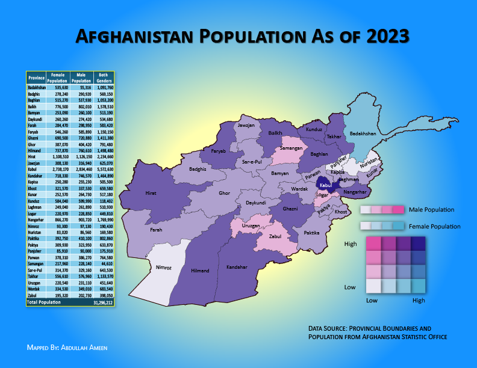

Afghanistan - A State of Armed Conflict
Geography
Afghanistan is a landlocked country located in South Central Asia, bordered by Pakistan to the south and east, Iran to the west,
Turkmenistan, Uzbekistan, and Tajikistan to the north, and China to the northeast. Its diverse geography includes
mountains, deserts, and fertile valleys, with the Hindu Kush mountain range running through the country.

Population
Afghanistan is made up of 421 districts and 34 provinces. The principal units of government are the provinces, which are further subdivided into districts. Administrative changes may result in a shift in the number of districts over time.
Kabul is the capital and largest city of Afghanistan, located in the eastern part of the country, and its situated in a narrow valley between the Hindu Kush mountain and the Kabul river.
Kabul elevation from the mean sea level is about 1800 meters making it one of the highest capitals in the world.
According to Worldometers, the current population of Afghanistan is 43,058,131 as of November, 2024. The below Bivariant choropleth map is made from another dataset that shows the total population and population by gender for each provice.
The Bivariant* Choropleth map and table give a detailed view of population distribution by gender across Afghanistan's provinces, with visual emphasis on areas with higher and lower populations. The information on this map can help understand population density and gender distribution in different parts of the country.

* A bivariant choropleth map is a type of map that uses color to represent two different variables across geographic areas, allowing the viewer to see how the two variables might be related in each location. In this example, the variables are female and male genders accross the country.
More to come
History
Afghanistan is made up of 421 districts and 34 provinces. The principal units of government are the provinces, which are further subdivided into districts. Administrative changes may result in a shift in the number of districts over time.
Kabul is the capital and largest city of Afghanistan, located in the eastern part of the country, and its situated in a narrow valley between the Hindu Kush mountain and the Kabul river.
Kabul elevation from the mean sea level is about 1800 meters making it one of the highest capitals in the world.
According to Worldometers, the current population of Afghanistan is 43,058,131 as of November, 2024. The below Bivariant choropleth map is made from another dataset that shows the total population and population by gender for each provice.
The Bivariant* Choropleth map and table give a detailed view of population distribution by gender across Afghanistan's provinces, with visual emphasis on areas with higher and lower populations. The information on this map can help understand population density and gender distribution in different parts of the country.
* A bivariant choropleth map is a type of map that uses color to represent two different variables across geographic areas, allowing the viewer to see how the two variables might be related in each location. In this example, the variables are female and male genders accross the country.